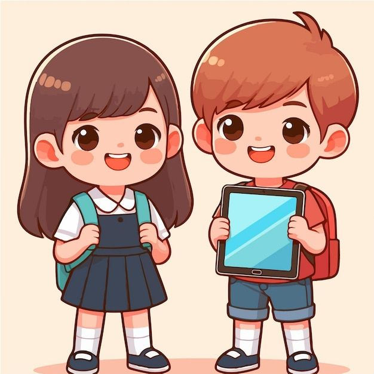

Educación
PREESCOLAR
2007-2008

En el kinder, aunque no podía hablar aún, aprendí a comunicarme de otras maneras. Me expresaba a través del dibujo y el coloreado, actividades que me ayudaron a desarrollar habilidades motoras y a conectar con los demás. Fueron años llenos de juegos y creatividad, donde mi curiosidad comenzó a despertar.
PRIMARIA
2008-2014
Fue en la primaria donde finalmente aprendí a hablar con fluidez. A medida que empecé a leer y escribir, también pude comunicarme mejor con mis compañeros y maestros. La primaria fue clave para el desarrollo de mis habilidades lingüísticas y para conocer un mundo más amplio a través de la lectura y las matemáticas.
SECUNDARIA
2014-2017
La secundaria fue una etapa de grandes cambios. A medida que me volví más independiente, también lo hizo mi forma de aprender. Fue allí donde me enfrenté a nuevos retos académicos, como la introducción a temas más complejos en matemáticas y ciencias sociales. Aprendí a organizar mi tiempo de manera más efectiva y a ser responsable de mis estudios. Además, fue en la secundaria donde empecé a desarrollar una mayor curiosidad por temas fuera del aula, como la tecnología, la música y las artes. Fue un periodo donde también me di cuenta de la importancia de la autoconfianza y la perseverancia, ya que no siempre todo era fácil, pero siempre valía la pena intentarlo.
PREPARATORIA
2017-2020
La preparatoria fue sin duda una de las etapas más formativas y decisivas en mi vida académica. Durante estos años, mi visión del mundo se amplió considerablemente, ya que comencé a tener contacto con temas mucho más especializados y con un enfoque más profundo hacia áreas de mi interés. Aprendí a investigar, a analizar de manera crítica y a tener una perspectiva más amplia sobre temas sociales, históricos y científicos. La preparatoria también fue clave para mi desarrollo personal, ya que me permitió conocerme mejor, tomar decisiones sobre mi futuro y comenzar a visualizar mi carrera profesional. Las experiencias compartidas con compañeros y profesores fueron esenciales, ya que me ayudaron a tener una visión más clara de lo que quiero lograr.
UNIVERSIDAD
2020-Actualidad
Actualmente, estoy estudiando Ingeniería en Sistemas Computacionales, y lo que más me apasiona de esta carrera es el desarrollo web, la gestión de bases de datos y la programación. Estos campos me permiten combinar la creatividad con la resolución de problemas, lo cual me motiva a seguir aprendiendo. Actualmente, me encuentro realizando mis residencias profesionales, en las cuales estoy trabajando en el desarrollo de una aplicación móvil. Este proyecto es una gran oportunidad para aplicar todo lo que he aprendido hasta ahora y perfeccionar mis habilidades. Una vez que termine este proyecto, estaré en condiciones de titularme y comenzar mi carrera profesional, donde espero contribuir al desarrollo tecnológico y continuar creciendo en el campo de la ingeniería.